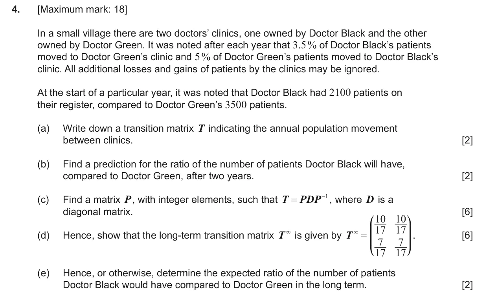
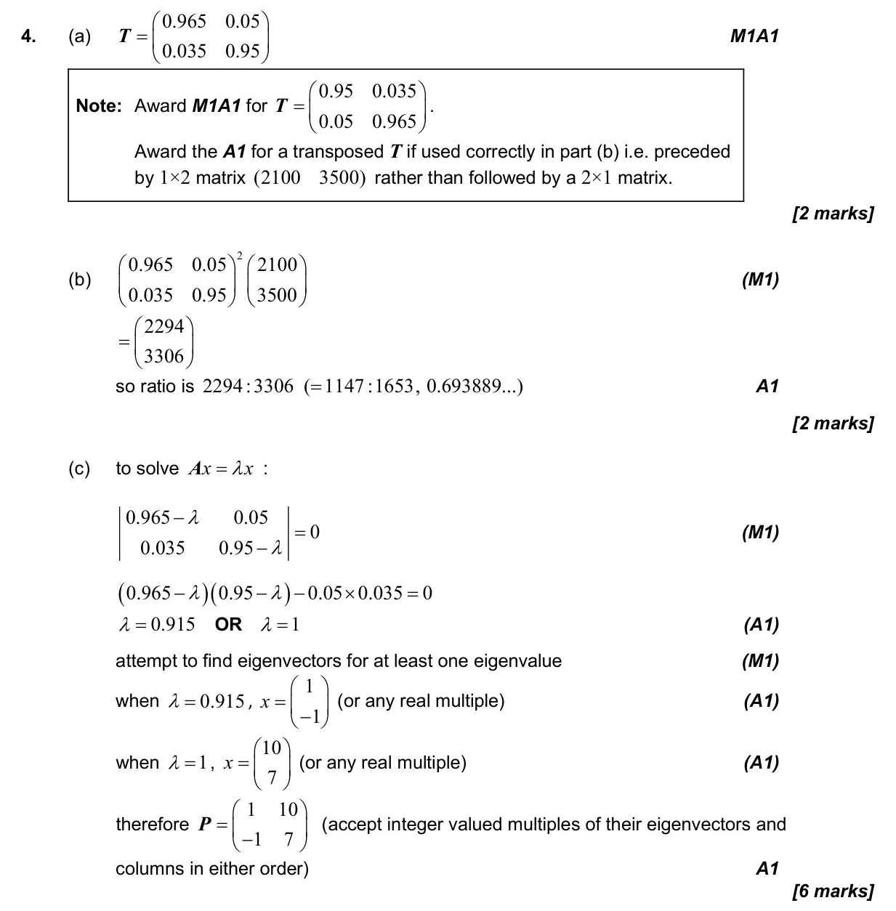
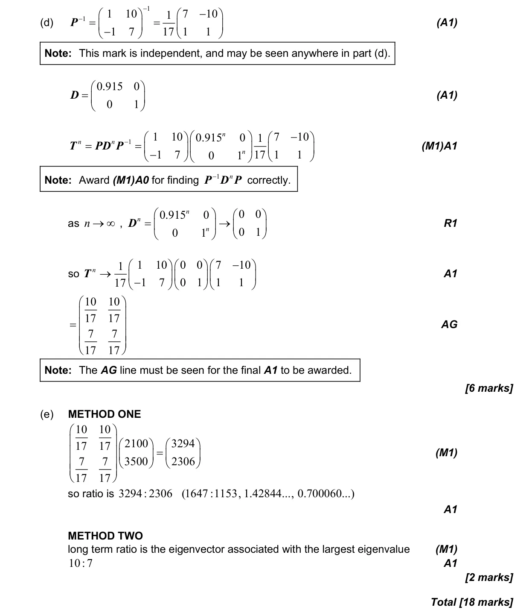

1.15 Eigenvalues, eigenvectors and diagonalisation of 2 × 2 matrices4.19 Transition matrices and Markov chains
Question

Markscheme


18 marks - May P2 TZ2 - Mathematics: Applications and Interpretation HL


